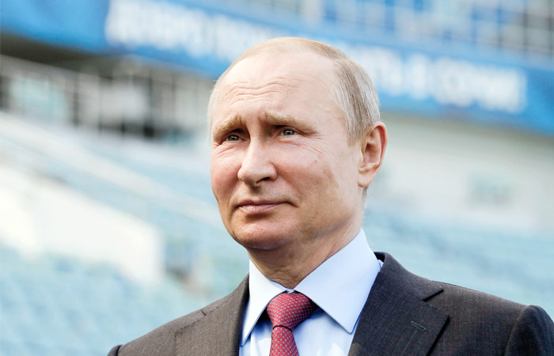

Путин заявил о готовности России к ЧМ-2018
Он получил паспорт болельщика и рассказал, что в России впервые в истории турнира смогли гарантировать болельщикам право бесплатного проезда.
Президент России Владимир Путин и глава Международной федерации футбола (ФИФА) Джанни Инфантино оформили паспорта болельщиков в Сочи, в специальном центре выдачи документа.
На проходившем в этот же день заседании наблюдательного совета оргкомитета «Россия-2018» глава государства рассказал журналистам о том, что сейчас происходит с подготовкой России к первому в ее истории Чемпионату мира по футболу. По его словам, подготовка практически завершена.
«Подготовка к Чемпионату мира практически завершена. Россия к турниру готова», — заявил Владимир Путин.
«Наступает самый ответственный этап точечной настройки всех механизмов, задействованных в процессе проведения мирового первенства», — добавил российский президент.
Министерству транспорта и оргкомитету РФ Путин дал поручение относительно обеспечения комфортного проезда гостей.
«Максимально комфортными должны быть и передвижения гостей чемпионата между городами-организаторами первенства. Я прошу Минтранс вместе с Оргкомитетом еще раз проработать этот вопрос», — сказал президент.
Он также отметил тот факт, что Россия впервые за всю историю проведения турнира смогла гарантировать болельщикам право бесплатного проезда. Это стало возможным благодаря выделению более семисот дополнительных поездов.
Также глава государства выразил надежду, что национальная команда страны сможет показать на домашнем мундиале свой лучший футбол. Он пожелал успехов игрокам и тренерскому штабу.
«Особое внимание российских болельщиков будет приковано к выступлению национальной команды. Мы все очень надеемся, что наши футболисты отдадут себя игре, отдадут без остатка, сыграют в полную силу, покажут волевой бескомпромиссный футбол, который ценят и любят болельщики», — сказал Путин.
.png)